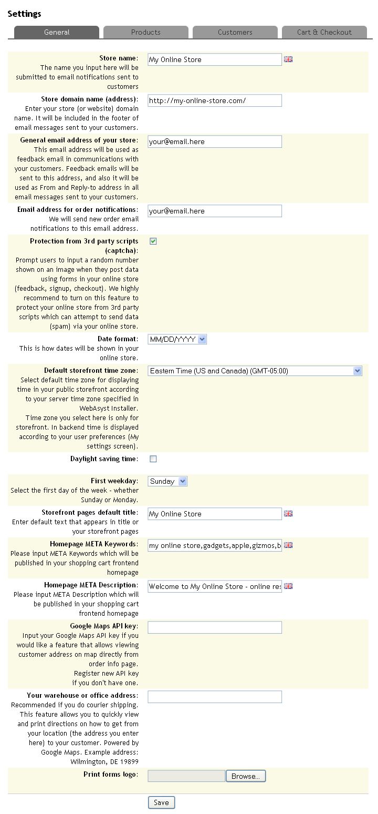
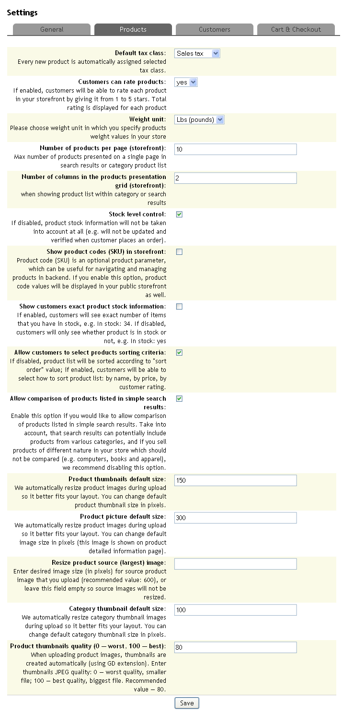
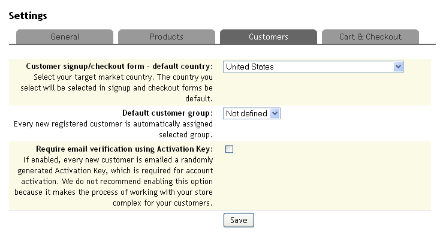
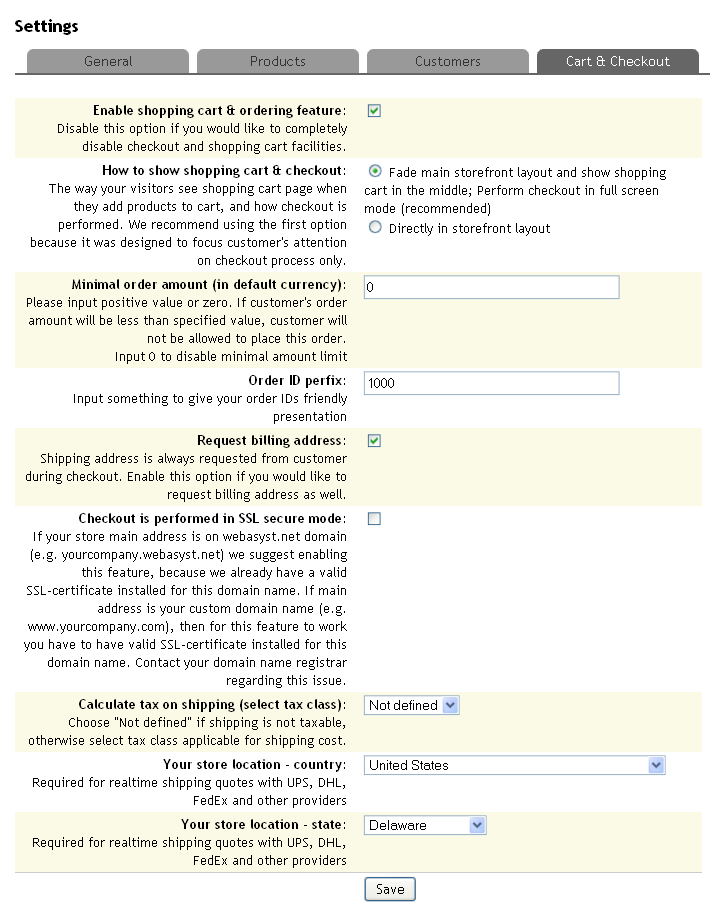
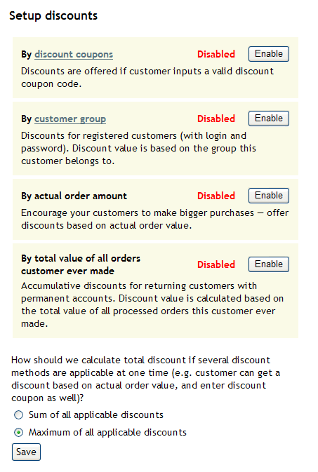
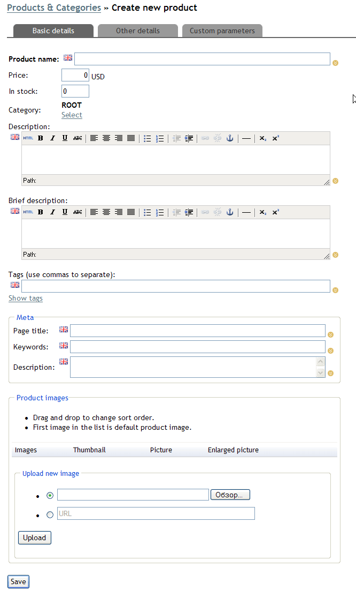
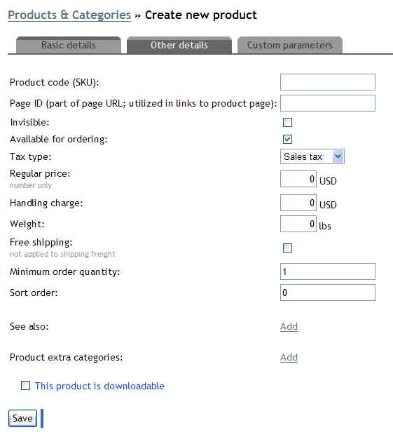
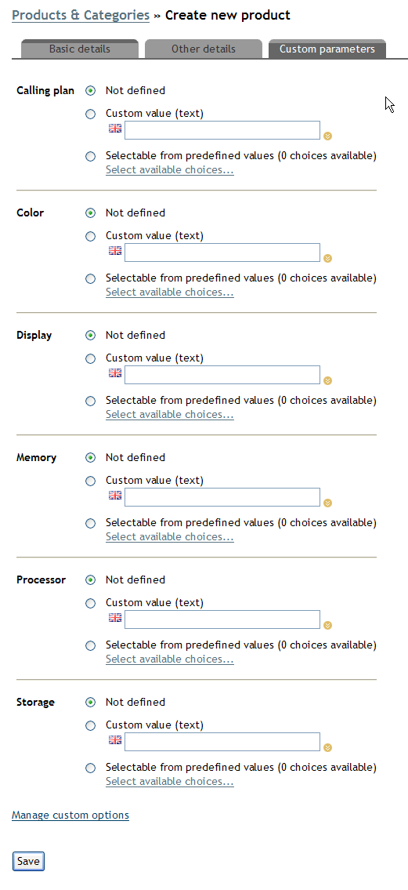
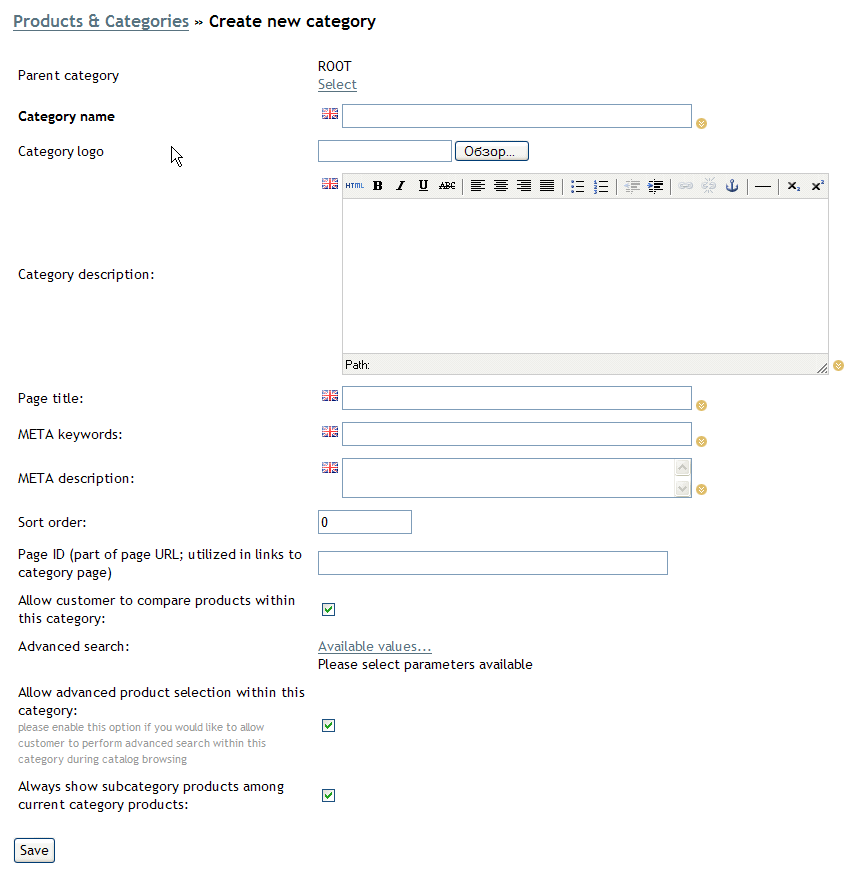
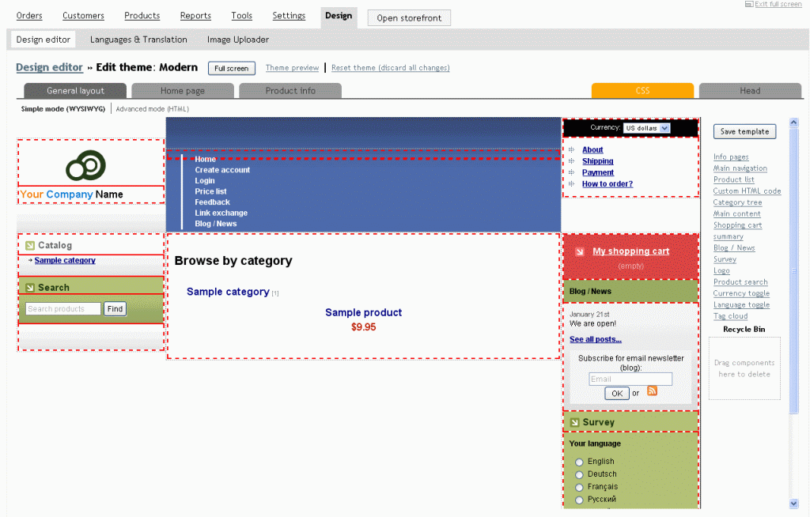

|
Online store settingsThe basic configuration settings of the online store are available in the "Settings -> Settings" section which contains 4 subsections: - Settings
- Product
- Customers
- Cart and checkout
Note: The maximum size of all text values is 255 characters.
Tip: If you are using WebAsyst online services, you may set up the storefront for your own domain name.
|
|
|
General settings

Store name: this text will be added to the "Thank
you for shopping at" phrase in all email notifications sent to customers.
Store domain name (address): enter the URL of your store. A link with this URL will be added
to order notifications emailed to customers.
General email address of your store: this value will be used as the "From"
address for all outgoing emails. It is preferable to enter an email address hosted on the domain name of your online store to prevent the outgoing emails from being
stopped by spam filters.
Email address for order notifications: this is your own email address to which notifications of new orders will be sent.
Protection from 3rd party scripts (captcha): enabling this option will make your customers
have to enter characters in an automatically generated image when submitting registration data or other information.
This ensures protection from spam submitted by robots.
Date format: choose between the two available formats:
MM/DD/YYYY or DD.MM.YYYY. This setting defines the displaying format of all dates in the store.
First weekday: affects the way sales reports are presented to the administrator.
Storefront pages default title: this value is added to the HTML tag TITLE of all pages in the storefront. It should be concise, relevant to your store merchandise,
and prospective customers.
Homepage META Keywords: this value should contain keywords (separated by space characters) which you would like to be found by search engines.
Homepage META Description: enter a three to five sentences long text
describing your store. It will be added to the respective HTML tag of the store home page. This text is often used by search engines as a brief summary of a found URL on the search results page.
Google Maps API key: this value allows you to locate the addresses of your customers on the Google map and calculate delivery routes. This tool is powered by the free Google Maps online service. If you do not have an API key, sign up at http://code.google.com/intl/en/apis/maps/signup.html.
Your warehouse or office address: enter the postal address of your office or warehouse in conventional form (e.g. 22, 5th avenue, New York). You may check your address at http://maps.google.com/
before saving. It will be used for calculation of delivery routes to your customers. Print forms logo: upload a graphic file to be automatically embedded in printed forms such as invoice or shipping summary.
|
|
|
Products settings

Default tax class: will be applied to all products added to
the store after it is set. Customers can rate products: enabling this option will display product rating as star images
and allow visitors to rate products. If the "Allow
customers to select products sorting criteria" is turned on, visitors
can sort products within category by rating, price etc. Weight unit: defines in which units you enter the weight of products, this value affects weight conversion calculations performed by several shipping modules. Number of products per page (storefront): sets the number products displayed on each category listing page in the storefront (including search results pages). If
number of products in a category exceeds this value, customers will be offered navigation links to proceed to other pages. Number of columns in the products presentation grid (storefront): affects
category and search results pages. Assigning a high value to this parameter might cause your storefront design distortion; check your design after changing it. Stock level control: prevents customers from ordering
out-of-stock items and deducts the number of ordered items from the "in stock"
values of the corresponding products. When this option is disabled, any product present in
the store is available for ordering and its "in stock" value is not taken into account or changed, when a new order is placed. Show customers exact product stock information: enabling this option will display the exact number of items in stock for each product; otherwise a general
message of its availability is displayed in the storefront. When the "Stock level control" parameter is disabled, this option has no effect. Allow customers to select products sorting criteria: enabling this option will add product sorting links (by name, price, and rating) to the category listing and search results views pages. Allow comparison of products listed in simple search results: enabling this option will add checkboxes to select products in search results pages for comparison. Product default thumbnail size: The size in pixels (by the largest image dimension), to which the original product image size should be automatically resized. Original proportions are retained. Product image thumbnails are displayed on category listing pages. The default
value is 150. Product picture default size: The size in pixels (by the largest image dimension), to which the original product image size should be resized. Original proportions are retained. Product pictures are displayed on product details pages in the storefront. The default value is 300. Note: For the full-size product image the originally uploaded file is used, which is added on the product-editing page; the size of that product image is not affected by your online store settings.
Resize product source (largest) image: if a value above 0 is entered, original product images will be resized to the specified value in pixels.
Category thumbnail default size: default value is 100. Product thumbnails quality (0 — worst, 100 — best): enter the desired degree of resized images quality in percents. 100 will ensure maximum image quality.
|
|
|
Customers settings

Customer signup/checkout form - default country: choose the name of country, which should be offered to customer by default on the customer registration page. Default customer group: choose the name of the group to which each newly registered customer should be automatically added. Require email verification using Activation Key: enabling this option will require customers to click a confirmation link in an automatically sent verification email message to complete registration in your online store.
|
|
|
Cart & Checkout settings
Enable shopping cart & ordering feature: disabling this option will change your online store to an ordinary online catalog. Using this parameter may be useful to temporarily disable the ability to order products during major catalog or design updates in the store. How to show shopping cart & checkout: choose how the shopping cart should be opened in storefront: as a new window, or as a pop-up area with the rest of the storefront covered by a semi-transparent layer. Minimal order amount (in default currency): customers with carts where total amount is below this limit will not be able to proceed to the checkout. Discounts, taxes, or shipping are not considered. Order ID prefix: any text entered here will be automatically added to all order numbers. Using this parameter may be useful to make your customers believe that you have already a long history of orders in the store, or to achieve compliance of your order numbering system with any third-party software which you might be using. Request billing address: enabling this option will require customers to specify a separate
address, which might be different from or be the same as the customer's main (shipping) address. Checkout is performed in SSL secure mode: enabling this option will ensure that your customers' payment details are transferred over secure data channels to your server and the servers of any payment gateways or services which you might be offering to customers. Correct use of this option is only possible with a valid non-shared SSL certificate installed and properly configured for
your domain name. Using shared SSL certificates is discouraged. Attempts to enable this parameter without a valid SSL certificate installed for the domain name of your online store will result in critical errors during checkout. Calculate tax on shipping (select tax class): enabling this option will apply
tax to the shipping cost; only the rates of the selected tax class will be applied.
Your store location - country: choose the country of your online store location, it is used for shipping cost
calculation by several real-time shipping quotes services and Google in conjunction with the "Your store location - state" parameter. |
|
|
Currencies
The "Settings -> Currencies" section allows you to manage the currencies available in the store. An unlimited number of currencies is allowed. One currency must be set as default. Any amounts of money in the store (e.g., products, shipping charges, tax rates, order amounts, etc.) are expressed in the default currency. For other currencies (if any) their conversion rates (in relation to the default currency) and ISO codes should be specified. ISO codes are used by several payment modules to identify currencies. If conversion rates are decimal fraction numbers, the fractional part is separated by a dot.
To edit a currency, click "Edit" under its name and specify desired values for the following parameters:
Name: the name of the currency which is displayed to customers and the store administrator.
Output format: the form in which amounts in this currency are displayed: number followed by the currency symbol/name or vice versa. To ensure that the numeric part of the amount is displayed, leave the {value} part.
Decimal symbol: the symbol which should be used to separate the integer part of a fraction from the fractional part.
Decimal places: choose how many digits of the fractional part should be displayed.
Thousands delimiter: the symbol which should separate digit groups from each other when large amounts are displayed. |
|
|
Countries and states
Sections "Settings -> Countries" and "Settings -> States" contain the lists of all countries and their respective regions (states, provinces, etc.). Only those countries and regions are available to customers during registration and checkout. Tax rates and shipping costs are also affected by the contents of those lists.
Each country can have a name (in all languages set up in the store) and two ISO codes (two- and three-letter long ones). ISO codes are required for correct function of shipping and payment integration modules.
To view the list of regions within a country, open section "Settings -> States" and select the desired country from a drop-down list at the page top. Some countries have lists of regions by default; you may add new regions, delete or modify the existing ones. |
|
|
Checkout & Signup forms
In section "Settings -> Checkout & Signup forms" you may change the amount of information requested from a customer during the checkout or registration of an account. Default form fields (Address, City, State/Province, Zip Code, Country) are listed at the page bottom. The default fields cannot be deleted, however, you may choose filling of any of those fields to be required or optional, or disable them.
Custom form fields are listed at the page top. You may add an unlimited number of custom fields to the registration form. Custom fields can be removed by a click on the corresponding link. Each custom field name can be entered in all languages set up in your store. Like default fields, custom ones can also be marked as required or optional. To change the order of appearance of custom fields in the storefront, enter the desired sort order values as integer numbers: the lower the value, the higher the position of a custom field on the customer registration or checkout page. Note: The name, last name, and email fields are always required and cannot be made optional.
|
|
|
Checkout replacement options
If you have a merchant account at Google Checkout or PayPal Express Checkout, you may offer your customers to choose alternative checkout options offered by those online payment services. When a customer checks out using any of those options, order details are transferred to the corresponding payment server, the customers checks out on a special payment page of the chosen payment service and is automatically redirected to your online store to view the summary of the order and the transaction results. For correct functioning of the alternative checkout options the cURL extension must be enabled on your server and a valid non-shared SSL certificate (issued by one of the providers approved by Google or PayPal
respectively) must be installed for your domain name. |
|
|
Taxes
Tax rates are defined as percentages in section "Settings -> Taxes". Taxes are never included in the base prices for which they are calculated and are therefore added to such base prices during checkout only. Tax rates applicable for the specific order depend on the geographical location of the customer (according to his/her postal address) and the ordered products. To create a new tax, open section "Settings -> Taxes", enter the desired tax name in the "Tax type name" field, select the type of customer address, for which the new tax should be applied: shipping or billing address, and click "Save". After the page reloads, click the "Define tax rates" link next to the name of the new tax — this will open a page where you can select the desired country or make the tax applicable for all countries and specify the tax rate in percents. Click "Save" to complete the tax creation.
Once tax rates are defined, you need to attach them to products. To do so, open section "Products -> Products & Categories" and click the desired product name to open its editing page. Open the "Other details" tab and select the desired tax class name for the "Tax type" parameter. Note: Each new product may be assigned any tax type by default. The default tax type for new products can be selected in section "Settings -> Settings -> Products" from the "Default tax class" drop-down list.
|
|
|
DiscountsDiscount settings are available in the "Orders -> Discounts" section. Discounts offered to customers may depend on several different conditions: the group in which a customer is included, the specified coupon code, the total cost of ordered products, or the total number of orders placed before by the same customer. If several types of discounts are enabled, their aggregate percentage or the greater of the percentages may be applied, depending on the corresponding setting.  Discount coupons When coupon discounts are enabled, you may create new coupon codes. To do so, click on the "discount coupons' link in the "Orders -> Discounts" section and click "Create new coupon" on the next page. The code for each new coupon is automatically generated; you may keep the generated code or type in any desired value. In addition to the coupon code, specify other parameters of the new coupon: - active: enable or disable the coupon;
- type: one-time, reusable with expiry date, reusable without expiration;
- discount: fixed amount or percentage of the order total;
- description.
Note: An absolute discount is applied at once; if its amount exceeds the order amount, the order will be made available to customer free of charge. The remainder of the discount amount in such cases will not be available for later use by the customer.
One-time coupons are convenient when the order amount needs to be corrected. They can also be used to pay the commissions of an affiliate in the form of a discount for products available in your online store.
Reusable coupons are good for promotions and can be emailed to prospective customers or published in advertisements. Coupons can be automatically disabled by specifying an expiry date. If no expiry date is set, the availability of a coupon can be changed through using the active option. Discounts by customer group A customer can receive a discount if he/she is included in one of the groups defined in your store. E.g., you may define a group named "returning customers" and assign them a certain discount. Including customers in that group with this discount option enabled will entitle them for the specified discount rate. Discounts by order amount Single order amount discount can be used to motivate your customer to place single orders with higher cost. When they are enabled, you can set threshold values and corresponding discount amounts. Thus, the amount of the discount will depend on the nearest threshold value above the order total. An indefinite number of threshold values is allowed. Discounts by total value of orders made by customer Using cumulative discounts is a way to reward your customers for coming back again and again. Threshold values are set up in the same fashion as discounts by single order amount, with the exception that the total of all customer's paid and processed orders placed is taken into account to determine the discount rate. Complex discounts Finally, you can define whether multiple discounts are applied all at once or just the largest of them all. |
|
|
|
|
Products
Products of the online store are managed in the "Products -> Products & Categories" section. To add a new products, click "Add new product" at the page top — this will open the product-adding page:  Product name is displayed in the storefront and can be used as a property, uniquely identifying each product. The product name is added to the contents of the TITLE tag of product pages in the storefront. Product names can be translated into all languages available in the store. Price is specified in the default store currency. Price values for other currencies is calculated automatically according to exchange rates set. It can have from 6 to 10 significant digits, depending on your server configuration. The dot is used as a decimal part separator. In stock: the number product units available for sale. This parameter is only used if you have the "Stock level control" parameter enabled in section "Settings -> Settings -> Products". Its value is updated after each new order is placed according to the number of items ordered. Category: the main parent category in which this product resides. If you select ROOT as the product parent category, such a product will not be visible in storefront, yet record of it remains in the database and later can be moved to any category. To change the product parent category, click "Select" under the current category name and choose another one in the pop-up window. Description: full product description is displayed on the storefront page with detailed product information. The built-in text editor allows you to apply simple formatting to your text. Extra formatting can be achieved through use of pure HTML tags. Click the "HTML" button in the text editor toolbar to open the HTML source editing window. Brief description is a short version of the product description text which is displayed on category listing pages and in search results in the storefront. Simple and HTML formatting options are available, too. Note: Be cautious when applying HTML formatting to the full and brief descriptions! Use of invalid or incomplete HTML markup (e.g., TD and TR tags without the TABLE tag) will result in distorted web pages in your online storefront.
Tags (use commas to separate): tags are words with which you assume that customer may associate different products. By adding tags to products you will allow your customers to quickly select only products associated to a specific word (tag). E.g., you may assign a tag matching the manufacturer's name to several products and add a tag cloud to the storefront layout. Tags are displayed in the storefront as simple links. A click on a link displays the list of products to which the corresponding tag has been assigned. Thus, alternative navigation through product catalog by manufacturer (for instance) can be implemented in addition to the basic navigation by category. Individual tags must be separated by a comma from each other. Page title: this value is added to the value of the TITLE tag of the product page in the storefront. If you leave this field empty, the product name and online store name will be added to the TITLE tag. Keywords: enter the keywords which should be added to the contents of the META tag keywords on the product page. Maximum allowed length is 255 characters. Description: enter the text which should be added to the contents of the META
tag description on the product page. Maximum allowed length is 255
characters. Product images: this section of the product-adding page allows you to upload image files with photos or pictures of your products. To upload a file from your computer, select the first option and select the file. You may also upload an image file located on any website (without password protection). To do so, select the second option and paste the URL of such an image file to the text field. After you have selected a file from your computer or have pasted its URL, click "Upload" to actually upload the file to the server. When an image file is uploaded, its reduced versions are automatically generated and saved. Reduced versions of a product image are used on the product page (default image) and on category listing pages or search-results pages (thumbnail). Original image is displayed when a store visitor clicks a default image on the product page in the storefront. The dimensions of default product images and thumbnails are specified in settings section "Settings -> Settings -> Products". Important: Avoid uploading image files if their names contain characters of national alphabets (except for English) or special characters. Such characters may be incorrectly processed by some web browsers of web servers/services.
To enter extended product parameters, open the "Other details" tab on the product-adding page:  Product code (SKU): enter a unique identifier of the product (stock-keeping unit) of the product. Using a product code may be useful during bulk import of product data from a CSV file and for better accounting of your sales. Page ID (part of page URL; utilized in links to product page): if SEO-friendly URLs are enabled in your store, this value will be added to the URLs of product pages in the storefront. If left empty, the page ID will be automatically generated from the product name. Avoid using the same page ID for several products as this will make only one of such products available to customers. Invisible: enabling this option will temporarily hide the product from customers. The product actually remains in the catalog and only visually disappears from the storefront. Available for ordering: if this option is enabled, the "Add to cart" button appears next to the product name in the storefront. Otherwise the product is not available for ordering, but its description and photos (if uploaded) remain visible to customers. Tax type: select the tax which should be applied to the product base price during checkout. Tax rates are defined in section "Settings -> Taxes". Regular price: specify any numeric value which will be displayed as a "discounted" price in the storefront to inform customers that you are currently selling this product at a lower price. Next to the discounted price customers will also see how much they will save if they purchase the product at the current price. The regular price must be higher than the base price, otherwise it will not be shown to customers. Note that the regular price is used for informational (advertising) purposes only and is not involved in the calculation of order total during checkout. Handling charge: extra cost per ordered product, which is automatically added to the total shipping charge. The handling charge is multiplied by the number of product items ordered and is applied only to the products in whose properties handling charge is specified (is different from zero). Handling charge is applied regardless of whether the Free shipping toggle option is enabled. Weight: the weight of a product is specified in weight units selected in section "Settings -> Settings -> Products". It is mainly used for calculation of shipping charges. Free shipping: enabling this option will disable the shipping cost calculation step for this product during checkout. This setting does not affect the handling charge which is always added to the shipping cost of an order. Minimum order quantity: specifying any integer value above zero will not allow customers to order a lower number of items of this product. Should a customer attempt to order a lesser number of such products, a warning will appear in the storefront, and further checkout will be disabled until the required minimum number of products is added to the shopping cart. Enter 0 to disable this limitation. Sort order: this setting accepts positive and negative integer values to set the position of a product in the storefront. The lower the value, the higher is the product's position in the category. See also: you may select an unlimited number of related products which you would like to offer to customers. The names and thumbnails of related products' images are displayed on the product page in the storefront. Customers can click on their names, read their descriptions, and order them together with the main product. Product extra categories: in addition to the main parent category, a product can also appear in other categories in the storefront. To achieve that, add extra parent categories in this section: click "Add" and select the desired categories in the pop-up window. This product is downloadable: if the product is a file (audio, video, software, etc.), you may provide a link to a customer for downloading instead of sending it on a physical media (CD or DVD). To deliver purchased electronic products online, enable this option in product properties and select the file from your computer. Then specify the period during which the purchased file should remain available to customer and enter the maximum number of download attempts. Important: Avoid uploading image files if their names contain characters of national alphabets (except for English) or special characters. Such characters may be incorrectly processed by some web browsers of web servers/services.
In addition to the basic product parameters listed above, you may assign an unlimited number of custom properties to a product. To do so, open the "Custom product parameters" tab on the product-adding page:  Note: Prior to specifying values for custom product parameters, necessary parameters must first be created in section "Products -> Product parameters".
This tab contains the list of all available custom parameters. To enter a fixed text value for a parameter, select the "Custom value (text)" option for that parameter and enter the desired value. To specify several selectable values for a parameter, select the corresponding (third) option, click "Select available choices..." and make your choices in the pop-up window. Note that any of the predefined values can be chosen as the default one. The default option will be automatically selected in the storefront. Yet, customer will still be able to select other options from a drop-down list. Each option can be selected twice. It means that the same product property with a drop-down list will appear twice in the store front and customer will be able to select several different (or equal) values of such properties. And last, each parameter value can be assigned a surplus value, which will be added to the product price, if the corresponding value is selected by customer. E.g., you may need that selection of a certain product size adds a certain amount to its base price. Create custom parameter "Size" with selectable options "S", "M", "L", "XL", etc., and specify the desired surplus values for each size on the product-adding or editing page.
undefined |
|
|
Categories
Product categories are defined in the "Products -> Products & Categories" section. All categories and products reside within the system category "ROOT" which cannot be edited or deleted. To create a new category, click "Add new category" below the category tree on the left. This will open the category-adding page:  Specify the following properties for the new category:
Parent category — one of existing categories (including ROOT) inside which the new category will be created. Click "Select" to choose the desired parent category. Category name — this name will be displayed in the storefront. Category logo — choose any image file on your computer. It will be displayed next to the category name in the storefront. The uploaded image will be automatically resized according to the value of the "Settings -> Settings -> Products -> Category thumbnail default size" parameter. Important: Use of non-Latin or non-numeric characters in image file name is discouraged as such file names may be incorrectly handled by some web browsers or web servers/services.
Category description — enter any descriptive text which should be displayed on category listing pages. Page title — text string which should be added to the contents of the TITLE tag on category listing pages in the storefront. META keywords — enter a list of words closely relating to the contents of the category. List items should be separated by a comma or a space character. META description — a brief description of the category listing page, which is often displayed on the results pages of most popular search engines. Sort order — parameter defines ordering of the categories inside their parent category. If it contains identical values for several categories, they are sorted alphabetically. You can enter negative and positive integer values in this field. This can be used to quickly move up certain category by assigning it a -100 order, or down by setting it to 1000. Page ID (part of page URL; utilized in links to category page) — is a "tail" part of the page link. It is generated automatically from the category name, but can be redefined by entering necessary text in this field. Search engines give bigger ratings to pages that have their content keyword in their address. Maximum length is 255 symbols. Allow customer to compare products within this category — flag turns on comparison feature. It adds selection checkmark beside each product in the category list and Compare button at the top and bottom of the page. Turned on by default. Advanced search — allows you to set up additional search options based on the extra characteristics of goods contained in the category. Once you click on Available values link, you will see a list of all product parameters defined in the store and be able to choose those relevant for the category. Each parameter can be allowed to be entered manually or selected from the list of predefined values. Turned off by default. Allow advanced product selection within this category — turns on settings made in the above parameter and shows additional search form on the category page according to the settings. Turned on by default. Always show subcategory products among this category products — turns on and off output of products contained in the subcategories upon entry of to the parent category. This is useful if your categories contain only a few products. Turned on by default. Category properties text fields can be entered in all languages available in the store. TO add translation you need to make other languages fields visible by clicking on a little two down pointing arrows icon at the bottom right of the field. It will expand and other language versions will be available for editing. To change settings of the existing category you need to choose it form the category tree on the left of the page and click Edit category link at the top of the right side of the page. You will se all parameters described above with their values. To delete a category, click on the respective link at the top of the page. Product records from deleted category will not be removed from the database, they will be moved to the ROOT category instead. If necessary, you can find the there and assign to another category or delete completely. |
|
|
Bulk product editingIn section "Products –> Products & Categories" you may edit several basic properties of several products at one time without the need to open each product's editing page. A click on a category name displays a table with the list of its products and their properties. To delete, move, or create duplicates of several products, select them and click the corresponding button under the product list. In order to multiply the prices of all currently visible products by any number (this is useful, if you would like to raise or lower prices for several products), enter the desired factor in the "Multiply all prices by" field and click "Multiply". Product prices in the table will be updated accordingly. To change the "in stock" and sort order values of the product, enter the desired values in the table cells. Click "Update prices & sort order" to save all changes. |
|
|
Bulk products import from a CSV file
In addition to manually adding each product or category to the catalog, one can prepare all products data in a spreadsheet and quickly import it to the catalog. To do so, create a CSV file using OpenOffice Calc, Microsoft Excel, or any other similar piece of software. A CSV file must have the structure described below, the order of columns is not important. The first row of the table must contain the names of columns, each column name in each cell of the first row. Columns of a CSV file
Column name
| Description | Product code
| Stock-keeping unit, SKU. Can be used as a unique product identifier during import of a CSV file. This parameter has no effect on categories. Use of any characters is allowed.
| | Name | The name of a product or category. If each product has a unique name, it can be regarded as a unique identifier during import of a CSV file. Use of any characters is allowed. | | Page ID (part of page URL; utilized in links to product page) | Part of the URL of a product or category page. Use of Latin letters, hyphens, and underscore characters is allowed.
| | Price | Product price in the default currency. If any value is specified in this column, the corresponding row is regarded as a product, otherwise — as a category. Use a dot as a decimal separator. | | Invisible | Enter 1 to temporarily hide a product. To leave the product visible, specify 0 or leave the cell empty. This value has no effect on categories. | Available for ordering
| Enter 0 to temporarily remove the "Add to cart" button for a product. The product will remain visible, but customers will not be able to order it. Enter 1 to ensure that he product is available for ordering. This value has no effect on categories. | Regular price
| The "discounted price" of a product expressed in the default currency. Use a dot as a decimal separator. | In stock
| The number of product items available for ordering. This value has effect, only if the "Stock level control" setting is enabled. Use of positive integer values is allowed. | | Sold | When a product is ordered, this value is increased by the number of ordered items. Values in this column are important for sales reports. Use of positive integer values is allowed. | | Description | The text of the full description of a product or a category. Use of HTML tags is allowed. | Brief description
| A brief version of the product/category description. Use of HTML tags is allowed. | Sort order
| This value defines the position of a product or category in the common list in the storefront. The lower the sort order value, the higher appears to the corresponding product or category. If several products or categories have equal sort order values, their names will be sorted alphabetically. Use of negative and positive integer values is allowed. | Page title
| This text is added to the TITLE tag of the corresponding product or category page in the storefront. This value is important for indexing by search-engine crawlers. HTML tags are not allowed.
| | META keywords | This text is added to the META keywords tag of the corresponding product or category page in the storefront. Specify important keywords separated by spaces or commas, which you would like to associate with that product or category. HTML tags are not allowed. Maximum length: 255 characters.
| | META description | This text is added to the META description tag of the corresponding product or category page in the storefront. Search engines often display this text on the search-results pages as a brief description of the found page. HTML tags are not allowed. Maximum length: 255 characters. | Handling charge
| Extra charge added per ordered product to the total shipping charge calculated during checkout, expressed in the default currency.
| | Weight | The weight of a product item, expressed in the weight unit selected in section "Settings -> Settings -> Products". | Free shipping
| Specify 0, if you would like not to apply common shipping charges to this product. Otherwise enter 1.
| Minimum order quantity
| A customer will not be able to complete an order, while the number of items of this product in the shopping cart is below this value. Use of positive integer values is allowed. Enter 0 or leave the cell empty to disable the limitation for this product.
| | Filename | The file name of a digital product (audio, video, software, etc.). | Download is available for (days)
| The duration of the period in days, during which the for download of a digital product will remain available after the order is paid. | | Maximum number of downloads (leave blank if unlimited) | The allowed number of download attempts for a digital product. | | Picture | Enter the names of product image files separated by commas, in the following order: default, thumbnail, large. Note that the file names must be separated by commas without white spaces. For categories a single file name is required.
| | Picture | There can be several columns with product image file names.
| With case
| A custom product parameter. Before importing values of custom product parameters, create those parameters in section "Products
–> Product parameters". Selectable parameter values must be specified between curly brackets and separated by comma, e.g.: {yes,no}.
If selection of a custom parameter value should add a surplus value to the base product price, the surplus value must be added after the equation character, e.g.: {yes=100,no}.
The value specified first between the curly brackets is selected by default in the storefront. If none of the values should be auto-selected, add a comma just after the first bracket; e.g., {,yes=100,no}.
Important! Custom option values specified between curly brackets must be unique. E.g., the following syntax is incorrect:
{40,41,42,42,43}
Correct syntax:
{40,41,42,43}
| | Color | A custom product parameter. Fixed text values of custom product parameters must be entered without curly brackets, e.g.: white.
|
Note: bulk product import using a CSV file will not automatically resize product images. To ensure that reduced images versions appear in your storefront, create them manually using any suitable image editor (e.g., GIMP or Adobe Photoshop) and upload them to the server using administrative section "Design -> Image Uploader" or via FTP into directory published/publicdata/DATABASE_KEY/attachments/SC/products_pictures/. Once that is done, specify the names of image files delimited by a comma in appropriate cells of the CSV file as shown in the table above, and import the file.
Tip: If you do not need to import all product properties, you may include only the desired columns in the CSV file (e.g., descriptions) and the required columns listed below: - "Price"
- The column which you are planning to select as the primary column during import; i.e., "Name", "Product code (SKU)", or "Page ID (part of page URL; utilized in links to product page)".
Catalog structure
All product names listed in the cells of a CSV file, must be grouped by categories. Before each product group there must be the name of the appropriate category. Names of top-level categories are specified without special markers. If a category is nested inside another category, an exclamation mark (!) must precede its name. The category nesting level is unlimited.
Example: the Name and Price columns in a CSV file may look as shown in the example below:
| Name | Price | Category 1
| | Product 1 of category 1
| 50 | | Product 2 of category 1 | 70 | !Subcategory 1 of category 1
| | Product 1 of subcategory 1
| 80 | !!Subcategory 1 of subcategory 1
| | | Category 2 | | | Product 1 of category 2 | 65 |
Importing a file containing (among others) such columns will create the following catalog structure:
- Category 1
- Product 1 of category 1
- Product 2 of category 1
- Subcategory 1 of category 1
- Product 1 of subcategory 1
- Subcategory 1 of subcategory 1
- Category 2
Example of a simple CSV file The example below contains a simple product and category hierarchy with a single category named "Mobile phones" containing a single product "Samsung SGH-L350":
Product code
| Name | Page ID (part of page URL; utilized in links to product page) | Price | Tax type
| Invisible | Available for ordering
| Regular price
| In stock
| Sold | Description | Brief description
| Sort order
| Page title
| META keywords | META description | Handling charge
| Weight | Free shipping
| Minimum order quantity | Filename | Download is available for (days) | Maximum number of downloads (leave blank if unlimited) | Picture | Picture | With case
| Color | | | Mobile phones
| mobile-phones | | | | | | | | | | 0 | | samsung, cellphones | Budget cell phones, with free delivery. | | | | | | | | cellph_cat.jpg | | | | | СТ-2121341 | Samsung SGH-L350 | samsung-sgh-l350 | 6800.00 | VAT | 0 | 1 | 7400.00 | 42 | 26 | New, <strong>very impressive phone</strong> for ladies. You will feel yourself unique and in tune thanks to built-in MP3 player. Loud ringer will make sure that you are not missing calls while in heavy traffic or a noisy club. Unique flower ornament will accentuate your caring nature. | New budget model from Korean manufacturer. | -15 | Buy Samsung SGH-L350 | buy, cellphone, Samsung, sgh-l350 | Samsung sgh-l350. Features & description, cheap delivery. | 150 | 174 | 1 | 2 | | | | C342.jpg,C342_small.jpg, C342_large.jpg | image.jpg,image_thumb.jpg, image_full.jpg | {yes=200,no} | White |
After creation of a CSV file open section "Products -> Import". Select the file from your computer, the data separator used in your CSV file (usually a semicolon), and the file encoding (often iso-8859-1 or utf-8), and click "OK". The next page will display the number of columns detected in the uploaded CSV file. Use the table at the page bottom to choose which columns of the CSV file should be imported into which products database fields. If you decide not to import some product property (e.g., "Pictures"), select "ignore this column". In the "Primary column" select the product property uniquely identifying each product. This choice depends on the way you distinguish products in your catalog: by product code (SKU), by name, or by the page ID. If during import an existing product is detected in the catalog with a value of the unique identifier exactly matching the same value of a product property in the CSV file, then the product properties from the CSV file (for which you have not selected the "ignore this column" option) will overwrite the properties of the existing product in the catalog. For instance, if you have selected the product code (SKU) as the primary column and there is a product with the SKU dr156 in the catalog, and you are importing a CSV file containing information about a product with the same SKU (dr156), then information about that product from the CSV file will overwrite the properties of the existing product. Note: The range of search for products with matching values of the primary column can be adjusted by use of the "When searching for products in the database by primary column, search only within current product category" option at the page top. With that option enabled, the search will be performed only within the category, which is specified as the parent category for that product in the CSV file (if such a category exists in the online catalog). Products with matching values of the primary column residing in other categories are not taken into account in this case. If that option is disabled, such products are searched in the entire catalog.
Tip: If you need to have products with equal values of a certain primary column (e.g., names) in different categories, you should enable the "When searching for products in the database by primary column, search only within current product category" option during import. Otherwise, if values of a primary column (e.g., SKU) should be unique for all products in the catalog, that option must be disabled during import
|
|
|
Product listsAny group of products can be presented in the storefront separately from the common catalog for advertising or other similar purposes. To create such a list, open administration section "Products -> Lists", and follow the instructions provided below. Creation of a product list - Enter an ID for the new list, it can be any combination of Latin letters, digits, hyphens, and underscore characters.
- Enter a name for the list — any title which will allow you to quickly distinguish it from other product lists in the store.
- Click "Save". A link with the new list name will appear on the page.
Adding products to a list - Click the link with a product list name.
- On the next page click "Add products to the list".
- Enter the name (fully or any part of it) of the product, which you would like to add to the list, in the text box and click "Find a product". The names of all products whose names contain the specified search text will appear below.
- Click the name of the desired product to add it to the list.
Publishing a product list in the storefront To make a product list appear in the storefront, follow these steps: - Open section "Design -> Design editor" and click the "Edit" link next to the name of the currently selected design template.
- On the next page select the part of the storefront where the the product list should be added: "General layout" (all storefront pages), "Storefront" (only the homepage), or "Product" (pages containing detailed information about a product).
- With the desired section selected, click the "Product list" link in the right-hand vertical pane, choose the desired list, enter the height in pixels for rectangle areas which will contain information about each product in the list, and click "Embed in template".
- Drag and drop the pop-up area with the product list contents to the desired location within the design editing area and click "Save template".
|
|
|
Payment methodsTo add a new payment option to your online store, navigate to section Settings -> Payment, click Add payment type, select the desired category ("Accept credit cards", "Online payment service", or "Manual payment type"), and click Next >>. On the next page select a payment module and click Next >>. Enter the required values on the module-editing page and click Save.
The following payment modules are available for use in Shop-Script:
Credit card payments
- 2checkout
- Authorize.Net SIM
- CCAvenue
- Chronopay (payment page)
- ePDQ Barclaycard Business
- eSelect plus
- GSPay
- HSBC
- ING BANK - iDEAL Basic
- JCC
- Mals e-commerce
- PayPal Payflow Link
- Protx
- RBS WorldPay
- SECPay
- Setcom
In addition to the above listed payment modules you can also download and install additional bank card payment modules from the Shop-Script website. These additional modules are not included in the base distribution to ensure unambiguous compliance of Shop-Script with the requirements of the PCI DSS standard. You can find out more about the standard and the use of additional payment modules at http://www.webasyst.net/support/help/shop-script-pci-dss-compliance.html. List of additional payment modules use of which may require PCI DSS compliance validation for your online store: - Manual credit card processing
- Authorize.Net AIM
- CHASE Paymentech
- Chronopay Direct
- eProcessingNetwork
- Innovative Gateway
- LinkPoint API CC
- LinkPoint
- NetRegistry
- Payflow Pro
- PayPal Pro Direct Payment
- PSI Gate
- SecurePay
- SkipJackDC
- StreamLineDO
- TCLink
- USAePay
- YourPay Connect
Manual credit card processing is possible if you have a merchant account with a payment processing provider or your bank. In this case the credit card information of your customers will be stored (encrypted) in the database for further off-line processing. Only the administrator of an online store can access credit card details to manually process a payment. To manually receive funds from a customer's credit card, log in to your merchant account using the credentials, which were provided to you together with a merchant account, and specify the customer's credit card data in the appropriate fields. Detailed instructions on working with the merchant interface of the payment system can be obtained from its support service.
Tip: To ensure the best security, it is strongly recommended to have an SSL certificate installed on the domain name of your online store.
Online electronic payment systems In order to accept payments through online payment systems, you need to register yourself in a system and receive account identification credentials (e.g., account ID, authorization key, etc.). Those credentials must be saved in the appropriate payment module's settings:
- E-Gold
- Moneybookers
- NOCHEX
- PayPal
- RBK Money
- ROBOXchange
- WebMoney
- Yandex.Money
Manual payment processing:
- Invoice
- Custom payment method
These payment methods allow you to collect a customer's payment details and either generate an invoice form or arrange the payment procedure in a different manner. |
|
|
Shipping cost calculation
Shipping methods available to customers are configured in section "Settings –> Shipping" section. To change the order in which they appear in storefront, drag and drop the shipping methods names using your mouse cursor.
To add a new shipping method, click the "Add shipping method" button. On the next page select the module, which will calculate the shipping charge, from the following options:
No shipping rate calculation: this method does not add any cost to the order total.
DHL, FedEx, InterShipper, UPS, USPS: these methods allow you to use real shipping quote calculations provided by third-party services. To use these modules, you need to register an account with the appropriate provider and receive your personal credentials, which must be saved in the shipping module settings. Note: The above listed providers offer their services mostly for continental US locations and their service availability for other locations has to be checked individually.
When a customer selects one of the above shipping options, the store automatically sends a request with your origination address, customer's location, order total weight, and chosen shipping options to the provider's server. The shipping charge received from the server is added to the order total. With some of these online shipping services a customer may choose the delivery and packaging type. The following methods are purely algorithmic and calculations are done according to their settings.
By countries/states module (fixed rates) and By countries/states module (percent of order amount) allow you to set shipping cost for each country and its regions as a fixed amount (expressed in the default currency) or a percentage of the order total.
Ground shipping and Ground shipping (by weight) allow you to set shipping cost according to the customer's postal address. It can be specified as a fixed amount or be calculated according to the total weight of the order. Every country and region can have a separate cost calculation schedule assigned. Four methods described above will be offered only to customers for whose countries/regions they have been set up.
Maximum of a fixed shipping rate and percent of order total: this module calculates the greater of the two values (the fixed amount specified in the module settings and a percentage of the order total) and adds the result to the order shipping charge.
Fixed shipping rate + percent: the algorithm of this module is similar to the one described above with the exception that both values are summed and then applied to the order shipping charge. |
|
|
Order processingNew order notifications When a new order is placed by a customer, the store administrator receives an automatically sent notification by email or also by SMS (if SMS notifications have been set up in section "Orders -> SMS"). A notification contains the order number and date, and other information. To ensure that email notifications of new orders are sent, a valid email address must be specified in section "Settings –> Settings –> General" in field "Email address for order notifications". To test whether notifications are sent, place a test order and check your email inbox for new messages. If you have not received a notification, ensure that spam filters of your mailbox allow you to receive automatic notifications from the domain name of the online store.
Order statuses After an order is placed, it is paid for, delivered or canceled by the store administrator, etc. Each stage of the order processing can be assigned a certain status for better accounting. By default, there is a fixed number of statuses in a store: Pending, Processing, Charged, Paid & Delivered, Refunded, Canceled. Each new order is automatically assigned status Pending. To inform the customer that his/her order has been received and is being processed, you may change its status to Processing. When the status is changed, you may choose to notify the customer of this change by email. Creation of an order by the administrator Orders are processed and created in section "Orders –> Orders". To create a new order for a customer, click the "Create new order" button at the page top. Then choose whether you are creating an order for a new customer or for an registered one. Registered customers can be searched by name, email address, or login name. Select the desired customer from the search results and click "Select" to proceed. If you are creating an order for a new customer, enter his/her full name and the postal address. On the next step add products to the order (using the product search field by name), specify the number of ordered product items and the descriptions of the shipping and payment methods. After you click "Save", the new order will be saved, and an email notification will be sent to the customer's email address. Order list The list of orders displayed in section "Orders –> Orders" depends on the current order view filter. All available order statuses are displayed above the order list. Should you need to find a single order by its number, use the search field on the right for that. For extra processing of orders beyond Shop-Script you may export them to a CSV file by clicking the "Export" button at the page bottom. Order processing To view full details of an order and be able to change its properties (status, list of ordered products) or print documents (invoice or shipping summary), click the order number in the common list. The order details page contains several buttons to change the order status and print its information on paper. For a more detailed order processing procedure use of custom statuses is possible. Custom statuses can be added in section "Orders -> Order statuses". There you can specify the name for the new status and font formatting which should be applied to orders in that status. |
|
|
SMS notifications of new ordersTo be able to quickly respond to new orders, you may set up SMS notifications. In this case an SMS message will be automatically sent to the specified mobile phone numbers immediately after a new order is placed by your customers. - To set up SMS notifications, open administration section "Orders -> SMS".
- Select the desired SMS module from the drop-down list at the page top depending on the bulk SMS messaging service provider where you have an account: Clickatell, SMS Driver, or SMS traffic. If do not have an account, register yourself and ensure that your balance is positive, otherwise SMS notifications will not work!
Note: If you have established an online store using WebAsyst online services, you do not need to choose an SMS module. In this case you have to add SMS credit in section "Account -> Upgrade/Downgrade" and complete the remaining steps of this SMS setup guide.
- Enter the credentials of your account registered at the bulk SMS messaging service provider and the transmission parameters such as whether the message body should be converted to unicode, the sender's name, etc.
- Enter the mobile phone numbers at the page bottom, to which SMS notifications should be sent. Then specify the time frame within which notifications will be sent and click "Save".
|
|
|
|
|
Customer list
The list of your online store customers is available in section "Customers -> Customers'' of the administrative backend. The default number of customers displayed per page (20) can be changed. You can search individual customers by their data as well. Enter it in one of the fields (login. name. group, status etc.) and click Find button to see resulting list. Activation status has a meaning if you have set Require email verification using Activation Key in Settings->Settings->Customers section. By default the list is sorted by login value field, with unregistered customers at the top of it. If you want to sort list in some other fashion, click on the column name. Second click reverses sorting. Last column has delete customer record icon. When you click on a record inside the list, you will be taken to the customer details editing page. There you can update registration fields values. All of the customer's data is broken into several tabs. They are Contact info, Address book, Order history and Affiliate program. Contact info contains data entered in the first portion of the registration form^ name, surname, login, email, and optional fields added to the form by administrator. Click on Edit link to change their values. Here you can activate user's registration record, if for some reason he was not able to do so himself. You can move customer to a certain group or include into subscribers of news/blog articles. Address book allows management of customer's shipping and billing addresses. Address can be updated or looked up in Google maps if you activated this feature. Add address link at the bottom of the list allows creation of an additional address record for the customer. Order history shows all orders placed by the customer and their statuses and details. You can sort them and switch to their detail by clicking on column headings or order record itself. At the bottom of the list you can see total amount of all orders broken by their statuses. Totals are shown in default currency of the store. |
|
|
Customer groups
In this section you can create groups for your registered customers. Each group can be assigned a specific discount. Discount is defined as a percentage that will be applied to order total. Group discount calculation is performed on the last step of the checkout and can depend on other discounts' settings in Orders –> Discounts. The group can be named in all languages available in the store. Section Settings –> Settings –> Customers has a Default customer group parameter. All newly registered customers will be assigned to the group set here. You can offer your customers a discount to motivate them for registering and increase chances they return. Customers can be assigned to groups other than default by store's administrator in Customers –> Customers –> Contact info tab. |
|
|
Affiliate program
Attract new customers by offering a commission to your existing clients that bring in new ones. Affiliate program settings can be accessed in Customers->Affiliate program section. First you have to enable it. Registered customers will see info on participating in their account details at the storefront upon login.
For the sale to be accounted towards commission for the affiliate partner one of the two conditions should be fulfilled. New referred customer either specify affiliate's login during checkout, or comes into your store via specially created link with the affiliate's ID in it. ID can be looked up in My account section of the main menu of the store front available to registered customers.
For example affiliate partner is registered with the "partner" login and goes to check his My account section of the storefront. Depending on whether Friendly URLs are turned on he will see one of the two links: http://your-store.com/referral/5/ or http://your-store.com/shop/index.php?refid=5. He can publish this link as it is on his own website, mail it to his friends or post it in the blog. As a result, any purchase made by a visitor that came using this link will be accounted towards commissions for the affiliate partner. Links can be made not only to the home page, but to any product or category page as well. For example, a link to some category in your store looks like http://your-store.com/category/some/. If you add referral/5/ to it where 5 is the partner's id it will have same result as in the above automatically generated link description. If friendly URLs are off, then you category link will look like http://your-store.com/shop/index.php?categoryID=556 and making it an affiliate referral link requires extra ?refid=5 at the end of it. Same is true regarding individual product pages.
If referred customer came through such link and registered, all of his future purchases will also be considered as a source of commission for the affiliate. It will be so until store administrator deletes this relationship by editing affiliates account info in Affiliate program tab accessible in Customers->Customers->Affiliate's customer record. Same tab can be accessed in Affiliate program section of the administration by clicking on the affiliates login in a list generated upon commission calculation.
Commissions are calculated per administrator's request. In Customers->Affiliate program section administrator needs to specify rate, set affiliates notification options. Beneath them you need to specify date range and click View button to check database for commissionable sales within it. After that you will see a list of affiliates with the amounts they are owed. You can edit amount calculated and currency or completely delete certain calculations. If necessary, commissions can be added manually by filling respective fields below the list.
Once commissions are calculated, you need to pay them out by generating notification to affiliates and specifying amounts within calculated limits. Resulting balance (commissions less payments for the period) is shown as balance outstanding. It can be both positive (store owes to an affiliate partner) and negative (when partner was overpaid).
One of the convenient ways to process payouts is to create one time use discount coupons for you affiliates in the amount owed to them. |
|
|
Newsletter subscribers
Any visitor of your store can subscribe to news published in it using a form available in the storefront. Buyers are also offered to subscribe at the time of checkout. Customers' emails are stored in the database and used to send out news contents at the time of their publishing in the Tools -> Blog/News section of the administrative backend. The list of subscribers can be managed under Customers -> Newsletter subscribers. Left part of the page shows an entire list of them. Each record in the list has a delete button, that can be used to delete them from the list only. Other client information will remain. Right side of the page radio buttons allow you to empty entire list or export it into a comma separated value format for processing outside of the store. Exported file is a simple text file with one email address per line.
|
|
|
Sales and page view reports
Shop-Script has three types of reports: sales, products statistics and category views.
Sales report can be accessed in Reports->Sales reports section. Here you can see monthly sales totals, compare two consecutive weeks/months/years, see monthly totals for entire time of the store's existence.
Product reports available allows you to see individual products sales, page views, ratings, votes and number of times they were added to carts. Data is presented as table with clickable column headings that allow sorting in both directions. If product record is clicked you will see its details as in Edit product section. Out of stock items are conveniently colored with red.
Number of times certain category was viewed can be seen in Category reports section.
If you need more detailed reporting, you an use Google Analytics free service. You need to sign up for it at http://www.google.com/analytics/. Once registered, you will receive a tracking code (don't mind the JavaScript source code just remember your account ID that starts with "UA-") and enter it in Tools Tools->Google Analytics section of the administrative backend. After you enable it statistics will start collecting. |
|
|
|
|
Widgets
Little snippets of embeddable HTML code that can be built into any web page and present some useful information from another source are called widgets. WebAsyst Shop-Script has three types of them. With their help you can place "live" information about your products and store practically anywhere on the Internet. Widgets placed on other web pages will work only if you have functional store they were created in..
"Product info" widget shows particular product information (name, description, price, picture) and Add to cart button that allows its ordering.
If you already have product information on a widget target page, and there is no need to duplicate it, use "Add to cart" widget instead. Place it near product info and you site/blog/page visitors will be able to order product without visiting your storefront.
In some cases, when you already have popular, well indexed site and plan to enhance it with a shopping cart functionality, in addition to the above described widgets, use "View cart / Checkout" widget. It will display visitors cart state. Independent use of this widget has no meaning, as it does not provide any ordering capabilities, only checkout of the already filled cart.
Widgets are created in administrative backend Tools –> Widgets section. All three types are available in one place. To create Add to cart and Product info widgets, you need to look up product they will be linked to first. Enter part of the product name to perform search and click Find a product button. Search results will be shown as a list. Click on the product needed to see its widget HTML code. Copy code and paste it into the target page HTML source code. Save it and check result in a browser.
Widgets can be adjusted for use along with the Affiliate program. This will require manual editing of the link included in widget and adding affiliate's id into it.
Note: Current version of WebAsyst Shop-Script widgets may work incorrectly with products that have selectable extra parameters. In some cases, widgets do not transfer selected options correctly. The only solution would be to contact customer and confirm his preferences.
|
|
|
Info pages
This tool lets you add any number of additional non-product information pages with static content. By default two of them, About and Shipping, are created during initial installation. They can be edited to include information relevant to your store, or deleted if not needed. Links to these pages can be added to the storefront into a separate block appearing on all pages automatically, or into any other part of the storefront or inside another info page. List of the existing pages is available in Tools->Info pages section of the backend. Click Edit link beside page name to edit its contents and options.
Visible in storefront toggle turns on and off page availability and its link in storefront. When it is off, page will not be accessible by any means.
Page title can be entered in all of the languages present in the store. and will be placed inside HTML Title tag of the page.
Page ID (part of page URL; utilized in links to info page) allows you to set an individual meaningful link name. By default pages are numbered. When this parameter is set, page link will include your store's domain name, plus /auxpage_, plus link name entered. Spaces in this field will be changed to dashes.
Page text field contains actual page text. It can be entered using built in HTML editor or pasted as raw HTML code from another source. Built in editor has text formatting capabilities. Page text can be defined separately for each language in the store.
Meta tag fields will define content of them inside pages HTML code header.
If you need a page that is accessed from another info page, you need to leave it "Visible", and delete a link to it from the storefront using Design editor. |
|
|
Blog/news
Any visitor of your site can subscribe to your news. Registered users can change theur subscription settings in the account details. Buyers are offered to include their emails in subscribers list at the checkout. All of the emails are stored ins the database and used to send out copy of the news published in Tools->Blog/news. Besides from email subscription visitors can use RSS feed readers to follwo your news publications. Link to RSS is available in the storefront. You can manage list of your subscribers in Customers-Newsletter subscribers section. Left side of it contains entire list of them, each record can be deleted individually or all of the at once by choosing respective option in the right half of the page. Here you can also export emails of your subscribers to a CSV file to be used outside the store. |
|
|
Survey
Here you can create a poll for your site's visitors. Enter text of the question and a list of answer choices for it. List them in Answer options field, one on each line and save it. Result will appear in the storefront and each visitor will be able to vote once during a single session. Votes statistics shown as a percentage of all votes for each option will be shown to every voter. Statistics with the absolute number of votes is available in the administrative backend only. Please note, that by creating new survey you will delete all of the previous poll results and settings. |
|
|
Link exchange
When enabled, this tool lets you and your site visitors to post links they want to exchange with you.
List of the links is presented as a tree structure based on their section grouping. Every link added will be shown twice, in its section and inside entire list of the links.
Visitors that want to add a link, have to fill out a form. Store's administrator can check which links have been requested to add and approve, decline or delete such requests.
Click Add new category button in the left part of the page to add new category and name it. To move existing links to a certain category, check mark them, choose destination category from a drop down list at the bottom of the links table and click on the Move to ... button |
|
|
Print formsWebAsyst Shop-Script allows you to quickly print documents which are frequently used for payment or delivery of orders, such as invoice or shipping summary for couriers. Such documents are automatically generated with all necessary details of the seller, customer, and the order already included. Setting up print forms Print forms should be configured in administration section "Tools -> Print forms" prior to use. Click the "Settings" link to the right of the desired print form name, specify the desired values on the next page, and click "Save". Company logo displayed in printed can be customized using setting option "Print forms logo" in backend section "Settings -> Settings -> General".
Using print forms Automatically generated documents are only available for orders placed by customers in the online storefront or those created by the store administrator. To print documents relating to any order, open section "Orders -> Orders" and click the link with the order number to view its full details. On the next page select the desired documents under the "Order forms" caption and click "Print". Preview pages for each selected document will open in separate browser tabs (or windows). Edit the contents of the selected documents, and click "Print" to send them to a printer.
|
|
|
Sitemap files
Effecient search-engine optimization can be achieved through use of sitemap files. Such files contain additional instructions for search crawlers about the website sections which should be indexed and other indexing-related information. - To automatically generate a sitemap file for WebAsyst Shop-Script open administration section "Tools -> Sitemaps".
- Edit the main URL of the online store, if necessary. A correct URL is usually detected automatically; however, you may edit it before it is added to the sitemap file.
- Select the sections of your online store which should be included in the sitemap file and click "Create". Note that if you created a sitemap file before, this button will be labeled "Update", and a click on it will update the existing file with the up-to-date data.
After the page reloads, a link to the sitemap file will appear at its top. Note: A sitemap file, when requested, always returns XML contents even though its name may end with .php. Remember that the sitemap file is not automatically updated when changes are made to your online storefront content. After you have added/deleted/edited a product/category, a news/blog post or an info page, be sure to update the sitemap file so that it contains actual data.
|
|
|
|
|
Design editor
Once you enter this section you will be presented with all available design templates. The one currently used is at the top of the list. Besides each template you can see links for previewing it enlarged, editing and setting as current.
Take a look at templates and choose the one you like. If none satisfy your needs and you plan to create one of your own, choose as default that template which is the closest in design and element layout to your own template. Click on Edit link. As a result you will see a page similar to this – 
Click on Full screen button to make more room for editor. To the right of this button you can see Theme preview and Reset theme links. First allows you to see results of your changes in live mode in storefront, second will return chosen template to its original unedited state.
There are five major sections represented by tabs. On the left
General layout,
Home page and
Product info allow you to to switch between different parts of the store page.
General layout presents entire page as seen by visitors and contains all of the sections presented on store pages. Tab titled
Home page contains central part of the page your visitors see when accessing home page of the store. Finally , tab
Product info lets you edit central part of the page when product is chosen with all of its information and details. These parts can be edited in WYSIWYG editor, reorder sections using drag and drop, or calling up their properties by double clicking on them. If you need to enter some HTML code, use Advanced mode HTML link underneath tabs.
Two tabs on the right —
CSS and
Head
— allow you to edit CSS styles applied to page elements and its HTML HEAD section. Both are not seen in browser, but play major role in page presentation
Most of the page is taken by the WYSIWYG editor. Each block is bordered with red dashes. Blocks can be moved around columns, top and bottom containers. If some of the blocks are not necessary, they can be dragged to Recycle bin area on the right side of the editor. Double click on the block brings up a menu of its properties.
Button at the top of the editor's right column Save template stores results of your editing. If you try to leave editor without saving changes made you will be presented with the warning.
Right column contains a list of elements that can be used in a page. List items are clickable and allow you to set respective block properties and embed respective block into the page by clicking Embed in template button. New block will appear floating inside WYSIWYG editor and can be placed into the appropriate location.
Each block's style can changed by double clicking on it and checking Override default CSS styles. A list of attributes will appear —
Background color can be chosen from a palette or entered directly as hex numerical value. Please note that for blocks using images for background, results may be different from expected, and require editing in CSS tab of the editor.
Border color can be defined in same fashion. Border decreases internal block space as it "grows inward". Width of the border is defined by the next parameter.
Border width (px) of the block set in pixels. By default it is 0, therefore to see results of border color editing you need to increase it to some value other than zero.
Text color applies to static inactive text. It is set in the same way.
Text alignment inside the block, left, right or centered. By default — left.
Links color will be applied to links contained inside the block (e.g. main menu items, category links etc.).
Padding (px) of the block sets "margin of whitespace around it. It is defined in pixels
At the bottom of the blocks list you see Recycle bin for dropping unnecessary elements
This were general properties of all blocks. Some of the have other unique settings.
Info pages allows you to choose which info pages can be accessed by direct links from storefront. Once clicked you will see a drop down list allowing you to show links to all pages or only those selected. Finally you can choose between vertical and horizontal placement of the links inside the block.
Main navigation is a list of main menu items not related to the products and categories. It lists : Home, Create account, Login, Price list, Feedback, Link exchange, Blog/News, and Order status links. You can select which ones will be available for your visitors. Alignment of the links (vertical or horizontal)can be set as well.
Product list shows arbitrarily chosen sets of products created in Products –> Lists section of the backend. If you need to add several lists to the page repeat procedure for each one of them.
Custom HTML-code can contain any static HTML (customer greeting, current promotions info etc.). It can also be used to embed Flash banners and widgets from other sites. Create this block and enter its contents into the field that will appear below. Embed in template button will place it floating in to the editor on the left.
Note: When you need to add custom code containing curly brackets { and }, be sure to add it between special tags as shown below: {literal}
...your custom code...
{/literal}
Custom code written in JavaScript (e.g., a web counter or the online consultant feature) should be added inside an additional condition to avoid its interference with the operation of the built-in design editor as shown below: {if !$CPT_CONSTRUCTOR_MODE}
{literal}
...your custom code...
{/literal}
{/if}
Always use these tags when adding code with the curly brackets in the "Advanced mode (HTML)" window under tabs General layout, Storefront, and Product, as well as under the Head tab.
Category tree shown on all pages of the store.
Main content — is a central part of all store pages. Product description, category contents and all of the other info is shown inside it depending on the visitor's actions.
Shopping cart summary shows number of products added to the cart and their total. Click on the link inside it allows your customers to proceed to checkout or see details of the products chosen.
Blog/News section shows a short list of the most recent posts, email entry field for subscribing and RSS icon. Here yoг can also set how many news this list contains.
Survey section shows active survey created in your backend and its results upon voting.
Logo item allows you to replace template's standard logo with your own. Click on it to upload your version. It is preferable to prepare your logo image to be of the same width as one in place. GIF, JPG or PNG files can be used.
Product search shows standard search field.
Currency toggle presents a dropdown list of available currencies set up by administrator. If you have only one currency set up, it can be deleted.
Language toggle allows your visitors to choose their language from a list of those set up and maintained by the administrator. You can choose its presentation form between text links or flag icons. In the latter case, you need to upload appropriate flag images for non default languages.
Tag cloud shows a list of tags assigned to the products in their Tag property. All of the words shown are links. Their font size depends on frequency of their usage.
Home page tab contains central part of the entrance page of your store. Some of the blocks described above are available: Product lists, Custom HTML, Category tree, Blog/news,
Survey, Product search, Currency toggle, Language toggle, Tag cloud.
You can move them from General layout to Home page if you want your visitors to see them only once they enter the store.
Section Unfolded category list shows all of your product categories with their logos. You can edit its formatting by double clicking on it in the editor. You can set number of columns of the list, whether subcategories are shown, number of such subcategories (if you have more subcategories than set here, their names will be replaced by ...) and subcategories list separator symbol (comma and space by default).
Last tab
Product contains elements of the detailed product description page central part. To change appearance of certain sections, double click on them. Sections can be reordered by dragging them inside editor. They can be deleted by dragging them to Recycle bin area on the right.
Custom parameters (selectable) block contains a list of configurable product options represented by drop down lists for customer's selection.
Custom parameters (fixed).
Related products assigned to the one chosen.
"Add to cart" button.
Description, detailed one.
Reviews left by visitors.
User rating shown as a "star scale" with ability to vote.
Product name. It is preferable to put it at the top of this page.
Price.
Request details form with the text and from fields entered by visitor.
Product images.
In cases when built-in editor is not sufficient, you can edit HTML code of the pages directly by switching to Advanced mode (HTML).
Tab CSS can be used to add your own styles definition, to be used in custom HTML code or product description fields. Head tab can be used to add custom META tags into HTML code (for example, Google Analytics verification code). Important! The built-in design editor cannot be used for the editing of the storefront design displayed in mobile web browsers (e.g., those used in mobile telephones, PDAs, etc.). For the mobile storefront version special template files are used which can be edited only by the owners of PHP scripts of Shop-Script application. Modification of mobile storefront templates is not available to users of the WebAsyst online services.
|
|
|
Languages and translation
Her you set up additional interface languages for your store. Initially, English is set as default language. You can change this setting after translating to a new language. New visitors will see your store in a language set as default. Language settings can be changed by clicking Settings link. Here you can set its two-letter ISO code, upload flag images, or disable it.
A link Edit translations,
opens a list of text messages used throughout the store. They can be changed for the existing language or translated for a newly added one. Messages are grouped by store's sections. Choose necessary by clicking on its tab and selecting a subsection from a drop down list. Major tabs are
General,
Frontend,
Backend.
When new language is added, all of its message values are copied from the default language, and need to be translated. Tip: with a new language added, do not forget to upload a new "Add to cart" button image for that language. Create an image file with the required picture and title using any suitable image editor (e.g., GIMP or Photoshop) and save it on your computer with a name of the form add2cart_LANGUAGE_ID.gif, where the newly added language ID should be specified instead of LANGUAGE_ID. For instance, if you have added German language with the ID de, then the file must be named add2cart_de.gif. Upload the image file to the server using administration section "Design -> Image Uploader" under the "Misc Images" tab.
Be careful when editing messages and do not delete any without necessity. If you want some of the messages to be omitted, you can delete their text values, not the constants themselves. |
|
|
Image uploader
Upload images here to use them in your Info pages, Blog/News posts and design editor.
|
|